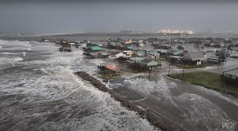

NASA Data and Visualizations
Real-Time Data from NASA
Our project leverages NASA's Earth-observing satellite data to visualize the Butterfly Effect in action. Explore key data on air quality, ocean temperatures, land use, and more to understand how small shifts in one system create larger impacts across the planet.
CO2 Levels & Global Warming
See how small increases in CO2 are fueling global warming and shifting weather patterns across the globe.

Sea Level Rise
Track how rising ocean temperatures are accelerating the melting of ice caps and causing coastal flooding.

Deforestation
Explore the cascading effects of deforestation on biodiversity and climate stability.